04/08/2020 — Nam giới 40 mấy tuổi đau ngực tái hiện được khi sờ ấn thành ngực
Bản dịch tiếng Việt của bài "A man in his 40s with chest pain reproducible with palpation" – Dr. Smith’s ECG Blog. Giữ nguyên toàn bộ 15 hình ảnh của bản gốc.
Tác giả Pendell Meyers, ca bệnh do George Konstantinou gửi
Một người đàn ông đầu 40 tuổi, có tiền sử hút thuốc lá và tăng huyết áp, đến khoa cấp cứu (ED) vì đau ngực sau xương ức và bên phải kéo dài 8 giờ. Cơn đau khởi phát lần đầu sau một sự việc căng thẳng và tăng giảm nhiều lần trong suốt 8 giờ đó. Cơn đau tái hiện được khi sờ ấn vào bên phải thành ngực.
Đây là điện tâm đồ ban đầu của bệnh nhân:

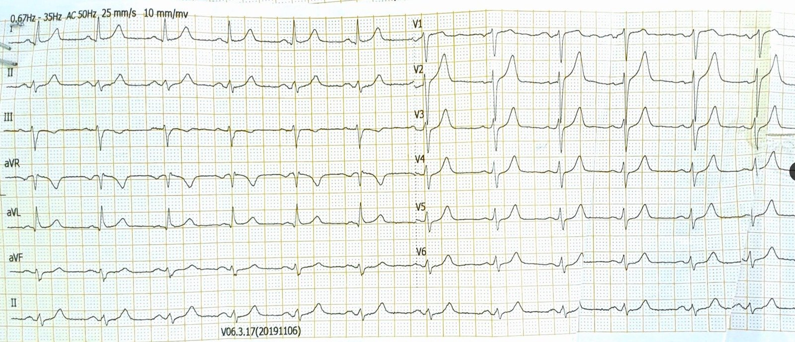
Có nhịp xoang với ST chênh lên (STE) rất nhỏ ở V2-V3. Sóng T ở V2-V5 rất đáng lo ngại là sóng T tối cấp (hyperacute T waves), với diện tích dưới đường cong tăng. Nếu so sánh với một điện tâm đồ cũ (không có trong ca này), gần như chắc chắn sẽ thấy diện tích dưới sóng T tăng lên rõ rệt. Có một gợi ý rất nhỏ về ST chênh xuống (STD) ở V5-V6 và III. Tăng tiến sóng R rất kém, với sóng R tối thiểu ở khắp các chuyển đạo trước tim.
Ở đây, Ken Grauer đã tính kết quả công thức 4 biến cho điện tâm đồ lúc nhập viện:

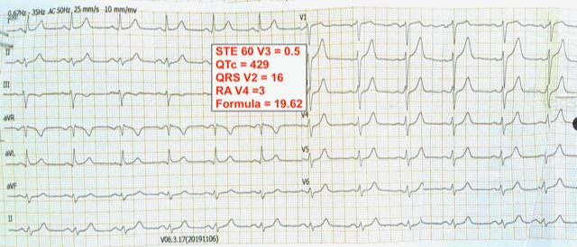
Công thức thay thế đơn giản hóaCòn có một công thức đơn giản hóa do Dr. Emre Aslanger xây dựng, dựa trên công thức gốc và được công bố trên American Journal of Cardiology năm 2018; 122(8):1303-1309. Ưu điểm của công thức mới là không phụ thuộc vào việc hiệu chỉnh QT, vốn sẽ phụ thuộc vào 4 công thức hiệu chỉnh QT khác nhau. Ngoài ra, công thức này dùng QT tính bằng milimét, không phải mili giây!
Công thức như sau: (RAV4 + QRSV2) – [(QT tính bằng mm) + STE60V3); giá trị < 12 gợi ý tắc LAD.
Diện tích dưới đường cong của công thức này là 0.963, với độ nhạy, độ đặc hiệu và độ chính xác lần lượt là 87%, 92% và 90%.
Với ca này: (3 + 16) – 10 + 0.5) = 19 – 10.5 = 8.5, nhỏ hơn 12.
Ca bệnh tiếp diễn
Bác sĩ tim mạch điều trị chính nhận định điện tâm đồ “không thuyết phục là STEMI” và không tiến hành chụp mạch vành cấp cứu. Bệnh nhân được dùng ticagrelor, aspirin và heparin sau khi kết quả troponin I độ nhạy cao trả về tăng ở mức 857 ng/L (giới hạn trên tham chiếu (URL) <28ng/L).
Lưu ý: Ngay cả khi không có điện tâm đồ, nếu bệnh nhân có đau ngực mới xuất hiện thì mức troponin cao như vậy đã đủ chẩn đoán nhồi máu cơ tim típ 1. Nếu cơn đau vẫn đang tiếp diễn thì cần kích hoạt phòng thông tim (cath lab) bất kể điện tâm đồ thế nào.
Bệnh nhân được nhập đơn vị hồi sức tim mạch (coronary ICU). Cơn đau kéo dài suốt thời gian ở khoa cấp cứu và trong vài giờ tiếp theo tại đơn vị hồi sức tim mạch, trong thời gian đó các điện tâm đồ liên tiếp được ghi lại:

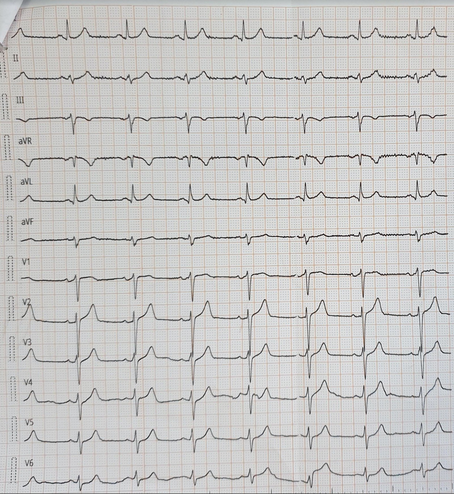

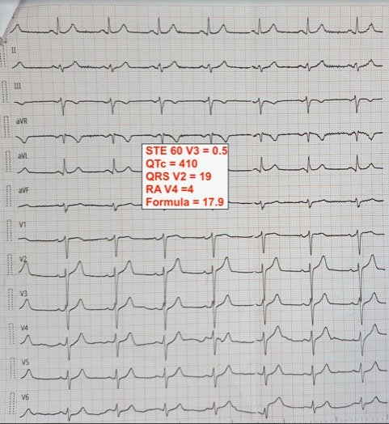

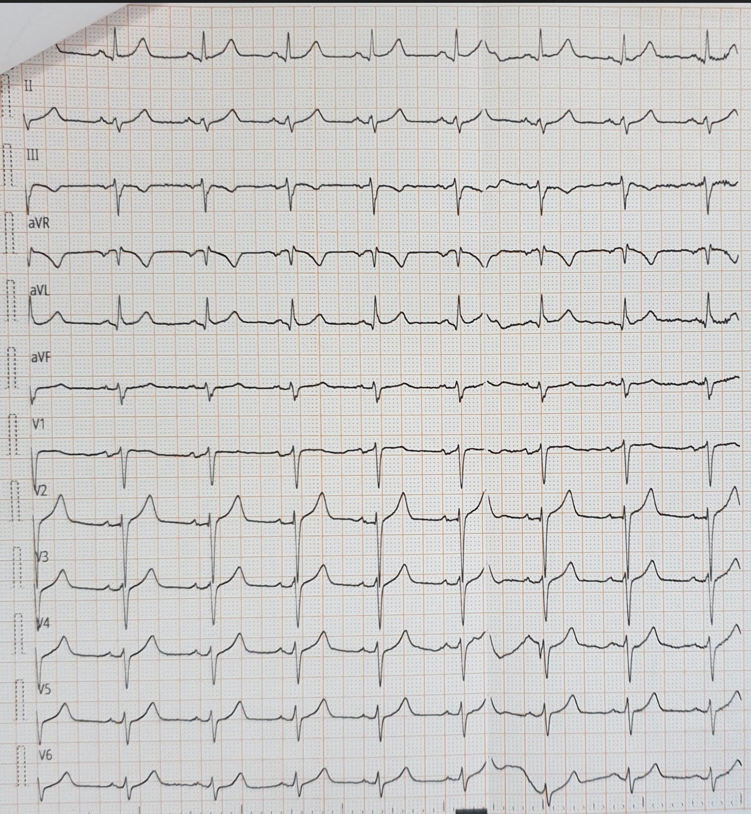

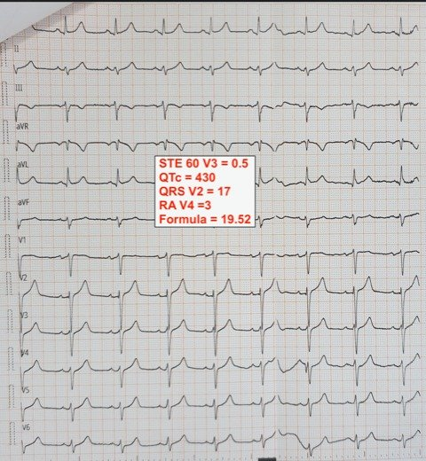
Cả hai điện tâm đồ ghi lại đều không cho thấy tiến triển rõ ràng tới tiêu chuẩn STEMI, phần lớn không thay đổi so với điện tâm đồ lúc nhập viện.
Do cơn đau kéo dài, cuối cùng bệnh nhân được chụp mạch vành vào khoảng 3 giờ sau khi nhập đơn vị hồi sức tim mạch. Có tắc hoàn toàn LAD đoạn giữa, và PCI được thực hiện thành công.

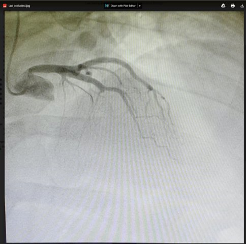

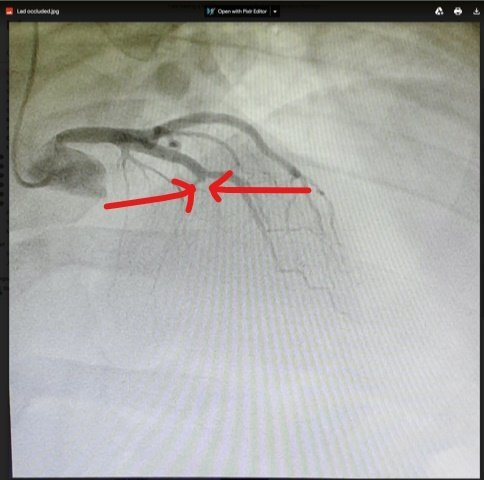

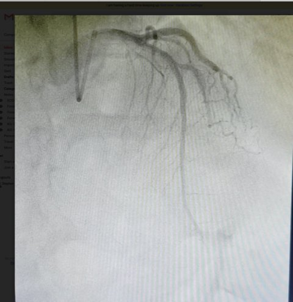
Sau can thiệp, cho thấy LAD đã được mở thông.
Điện tâm đồ ngày hôm sau:

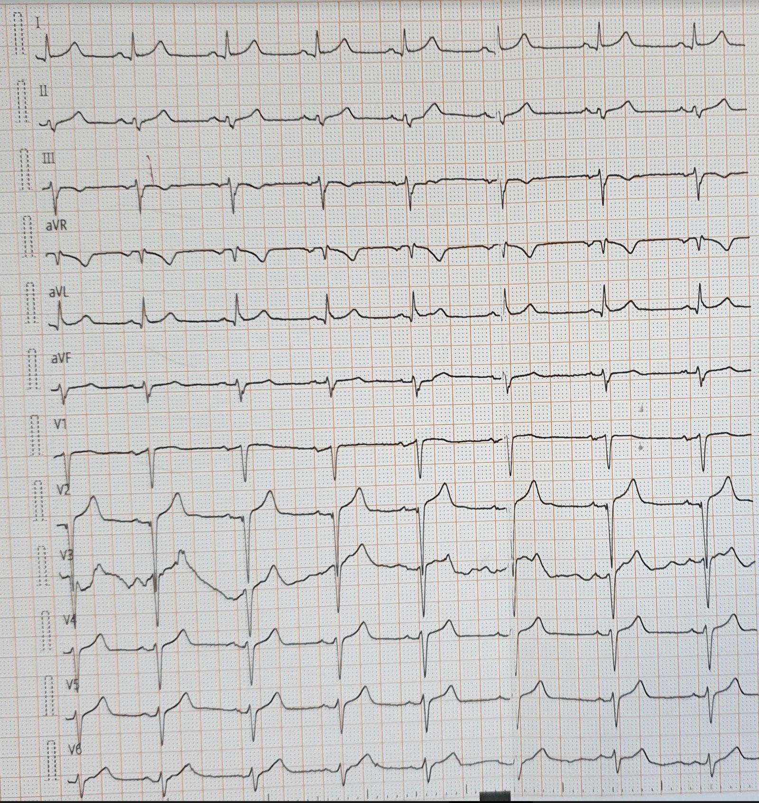
Không có dữ liệu về troponin đỉnh và diễn biến lâm sàng.
Những điểm cần học:
Những ai muốn học cách đọc điện tâm đồ ở trình độ chuyên gia có thể áp dụng những bài học này vào thực hành để giúp nhận diện OMI trong những trường hợp lẽ ra sẽ bị bỏ sót.
Hãy dùng công thức 4 biến phân biệt OMI do LAD với ST chênh lên biến thể bình thường để giúp nhận diện những ca tắc LAD kín đáo như ca này.
Bệnh nhân này lẽ ra có thể được tái tưới máu sớm hơn khoảng 3 giờ, điều nhiều khả năng giúp giảm kích thước ổ nhồi máu và cải thiện kết cục lâu dài.
Ở bệnh nhân nhồi máu cơ tim được chẩn đoán bằng troponin mà đau ngực vẫn kéo dài, kích hoạt phòng thông tim cấp cứu là chỉ định theo cả hướng dẫn của châu Âu lẫn Hoa Kỳ (ACC/AHA, ESC).
Tài liệu tham khảo:
Xây dựng công thức 4 biến:
Driver BE, Khalil A, Henry T, Kazmi F, Adil A, Smith SW. A new 4-variable formula to differentiate normal variant ST segment elevation in V2-V4 (early repolarization) from subtle left anterior descending coronary occlusion – adding QRS amplitude of V2 improves the model. Tạp chí J Electrocardiol. 2017;50(5):561–569.
https://pubmed.ncbi.nlm.nih.gov/28460689/ (bài báo xây dựng công thức bốn biến trên PubMed)
Thẩm định công thức 4 biến:
Bozbeyoğlu E, Aslanger E, YıldırımtürkÖ, và cs. A tale of two formulas: differentiation of subtle anterior MI from benign ST segment elevation. Tạp chí Ann Noninvasive Electrocardiol. 2018;23(6):e12568.
https://pubmed.ncbi.nlm.nih.gov/29938879/ (bài báo thẩm định công thức bốn biến trên PubMed)

===================================
BÌNH LUẬN CỦA TÔI, bởi KEN GRAUER, MD (4/8/2020):
===================================
Ca hôm nay (do Dr. Meyers trình bày) tiếp nối “chủ đề” của nhiều bài gần đây của chúng tôi — cụ thể là thay đổi mô hình, rời bỏ cách tiếp cận “STEMI” với “không STEMI” (vốn bỏ sót khoảng ~25-30% các ca tắc mạch vành cấp) — với mục tiêu để ngày càng có nhiều người chấp nhận mô hình OMI-NOMI hiệu quả hơn.
- Chúng tôi đã đưa ra một ví dụ về OMI bị bỏ sót trong bài ngày 1 tháng Tám năm 2020 gần đây của chúng tôi. Ca hôm nay minh họa thêm một ví dụ khác …
Tôi cho rằng các dấu hiệu điện tâm đồ trong ca hôm nay là kín đáo. Vì sự thay đổi giữa các bản ghi trên các điện tâm đồ liên tiếp khá hạn chế — tôi quyết định tập trung Bình luận của tôi vào điện tâm đồ ban đầu ghi tại khoa cấp cứu, mà để cho rõ, tôi đã đánh dấu và trình bày lại trong Hình 1.
- Bệnh sử trong ca hôm nay có phần mơ hồ (equivocal). Đau ngực là một triệu chứng mới ở người đàn ông 40 mấy tuổi hút thuốc lá này. Cơn đau ngực đã xuất hiện từng lúc trong nhiều giờ trước khi đến khoa cấp cứu, dù có một số đặc điểm không điển hình.

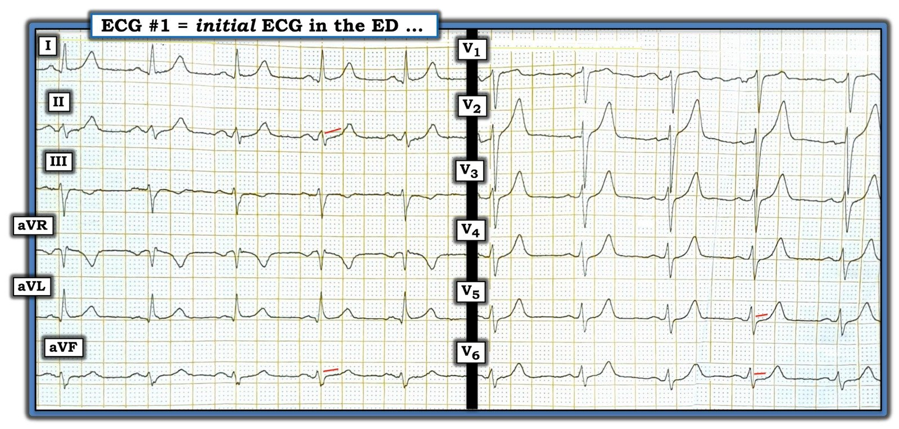
SUY NGHĨ CỦA TÔI về điện tâm đồ #1: Câu hỏi lâm sàng quan trọng trong ca này là dù không thỏa tiêu chuẩn “STEMI” — Bệnh nhân có điện tâm đồ như trong Hình 1 có nên được thông tim không?
- Nhịp trong điện tâm đồ #1 là nhịp xoang, tần số ~70-75/phút. Các khoảng PR, QRS và QTc đều bình thường. Có LAD (trục lệch trái — Left Axis Deviation) — dù chưa đủ để xếp là LAHB (vì không có ưu thế âm rõ ràng ở chuyển đạo II). Không có lớn buồng tim.
Về Thay đổi Q-R-S-T: Tôi ghi nhận các dấu hiệu mô tả sau — tất cả đều kín đáo!
- Có sóng Q vách nhỏ và hẹp ở chuyển đạo I và aVL.
- Vùng chuyển tiếp muộn ở các chuyển đạo ngực. Có lẽ diện tích dương thực của sóng R ở chuyển đạo V5 lớn hơn diện tích của sóng S ở chuyển đạo này — nhưng chỉ vừa đủ. Phức bộ QRS không bao giờ trở nên dương ưu thế ở các chuyển đạo ngực (tức là có “tăng tiến sóng R kém”).
- Có thẳng đuỗn đoạn khởi đầu của đoạn ST ở chuyển đạo II (đường ĐỎ chéo ở chuyển đạo này). Hình ảnh này rõ ràng trông bất thường — có lẽ vì sóng T lớn không tương xứng (đầy ở đỉnh và rộng ở đáy) ở chuyển đạo này.
- Đoạn ST ở chuyển đạo aVF cũng thẳng đuỗn. Dù vậy — đoạn ST ở aVF không gây cho tôi ấn tượng nhiều là bất thường rõ ràng, có lẽ vì sóng T đi kèm ở chuyển đạo này “khiêm tốn” hơn nhiều.
- Dường như có một chút ST chênh lên dốc lên ở các chuyển đạo bên cao I và aVL. Tôi không diễn giải dấu hiệu này là nhất thiết bất thường — vì các biến thể tái cực đôi khi cũng có ST chênh lên với hình dạng tương tự.
- Sóng T đảo ngược ở chuyển đạo III — nhưng không có ST chênh xuống, và với phức bộ QRS âm ưu thế ở chuyển đạo này — sóng T đảo ngược ở chuyển đạo III không nhất thiết là bất thường.
- Sóng T ở các chuyển đạo V2 đến V6 trông cao không tương xứng. Dấu hiệu này kín đáo — có lẽ vì biên độ sóng R khiêm tốn ở tất cả các chuyển đạo ngực. Nhưng bất kể biên độ sóng R ra sao — tôi không chờ đợi biên độ sóng T vượt quá biên độ sóng R, như trong điện tâm đồ #1 ở các chuyển đạo V4, V5 và V6. Bằng chứng ủng hộ rằng các sóng T ở chuyển đạo ngực bên này là bất thường (và trong bối cảnh này, là tối cấp!) đến từ: i) đoạn ST thẳng đuỗn ở các chuyển đạo này (các đường ĐỎ chéo); và, ii) Nhận thấy sóng T lấn át sóng S ở các chuyển đạo này.
ĐIỀU CỐT LÕI về điện tâm đồ #1: Có một số dấu hiệu kín đáo trên điện tâm đồ #1. Không dấu hiệu nào nếu đứng riêng lẻ đủ để buộc tôi khuyến nghị kích hoạt phòng thông tim ngay. Tuy nhiên — khi xét chung + với bệnh sử ( = đau ngực mới xuất hiện sáng hôm đó và vẫn còn kéo dài tại thời điểm ghi điện tâm đồ #1) của bệnh nhân + troponin độ nhạy cao dương tính — cần nghĩ đến một hội chứng vành cấp đang diễn ra cho đến khi chứng minh được điều ngược lại.
- Tổng hợp lại tất cả — tôi sẽ diễn giải sóng T ở chuyển đạo II và V2 đến V6 là tối cấp trong bối cảnh một hội chứng vành cấp đang diễn ra.
- Khi xét chung — việc không có ST chênh xuống soi gương ở các chuyển đạo dưới, ST chênh lên ở aVL không đáng kể + không có sóng T tối cấp ở chuyển đạo V1 đều phù hợp với một tổn thương LAD đoạn giữa (đúng như kết quả thông tim).
Xin cảm ơn Dr. George Konstantinou (Hy Lạp) đã gửi ca bệnh này.